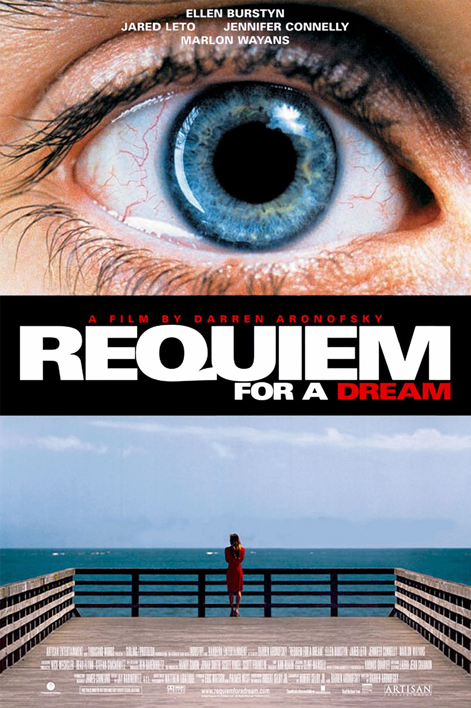

films
Synopsis:
Programation & Horaire:Jeudi de 18H à 20HBlake prend le train vers l’Ouest pour y exercer le métier de comptable. Arrivé dans la sinistre ville de Machine, il s’y trouve accusé à tort d’un double meurtre et prend la fuite, une balle logée près du cœur. Accompagné de Nobody, un Indien cultivé qui le prend pour le poète anglais William Blake, il s’engage dans un périple à travers l’Ouest sauvage… Programation & Horaire:Jeudi de 20H à 22HRebellion dans un hôpital psychiatrique à l'instigation d'un malade qui se révolte contre la dureté d'une infirmière. Programation & Horaire:Jeudi de 22H à 00HHarry Goldfarb est un junkie. Il passe ses journées en compagnie de sa petite amie Marion et son copain Tyrone. Ensemble, ils s'inventent un paradis artificiel. En quête d'une vie meilleure, le trio est entraîné dans une spirale infernale qui les enfonce toujours un peu plus dans l'angoisse et le désespoir. La mère d'Harry, Sara, souffre d'une autre forme d'addiction, la télévision. Juive, fantasque et veuve depuis des années, elle vit seule à Coney Island et nourrit dans le secret l'espoir de participer un jour à son émission préférée. Afin de satisfaire aux canons esthétiques de la télévision, elle s'astreint à un régime draconien. Un jour, elle le sait, elle passera de l'autre côté de l'écran. Programation & Horaire:Vendredi de 18H à 20H Edward Scissorhands n'est pas un garçon ordinaire. Création d'un inventeur, il a reçu un cœur pour aimer, un cerveau pour comprendre. Mais son concepteur est mort avant d'avoir pu terminer son œuvre et Edward se retrouve avec des lames de métal et des instruments tranchants en guise de doigts. Programation & Horaire:Vendredi de 20H à 22H Oscar et sa sœur Linda habitent depuis peu à Tokyo. Oscar survit de petits deals de drogue alors que Linda est stripteaseuse dans une boite de nuit. Un soir, lors d'une descente de police, Oscar est touché par une balle. Tandis qu'il agonise, son esprit, fidèle à la promesse faite à sa sœur de ne jamais l'abandonner, refuse de quitter le monde des vivants. Son esprit erre alors dans la ville et ses visions deviennent de plus en plus chaotiques et cauchemardesques. Passé, présent et futur se mélangent dans un maelstrom hallucinatoire. Programation & Horaire:Vendredi de 22H à 00HAdam, un professeur discret, mène une vie paisible avec sa fiancée Mary. Un jour qu'il découvre son sosie parfait en la personne d’Anthony, un acteur fantasque, il ressent un trouble profond. Il commence alors à observer à distance la vie de cet homme et de sa mystérieuse femme enceinte. Puis Adam se met à imaginer les plus stupéfiants scénarios... pour lui et pour son propre couple.
